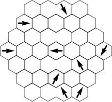
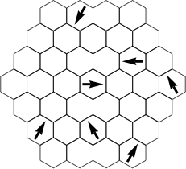
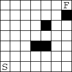
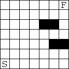
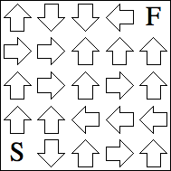
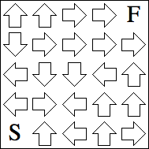
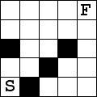
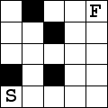

1-2. Pointing At The Crowd
Put dots in some of the blank hexes so that each arrow points in the direction that has the most dots. Arrows point at strictly more dots than any other direction parallel to a side of the hexagon.
3-4. Unequal Length Mazes
Find a path from the bottom left to the top right passing through every white square exactly once. Your path must alternate horizontal and vertical segments, and two consecutive segments can not be the same length.
5-6. Every Third One
Find a path from Start to Finish that moves horizontally and vertically. Every third arrow along the path should point in the direction of the path, and all other arrows along the path should not. The path may revisit arrows multiple times, but may not revisit the Start or pull a U-turn.
7-8. That's Not Right
Find a path moving horizontally, vertically, and diagonally that Starts in the lower left and Finishes in the upper right. The path should pass through each white square exactly once, should not pass through any black squares, and should never make a right angle.
Click here for the answers.
Click here to go back to the Puzzle Palace.
       